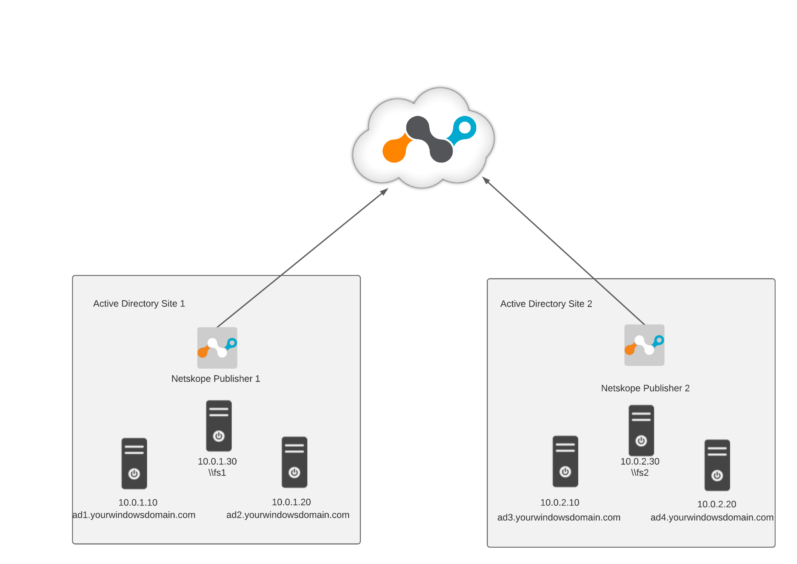
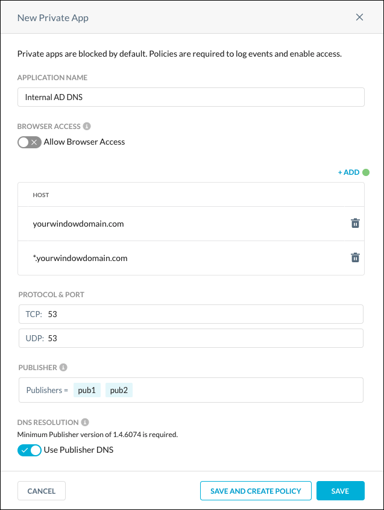
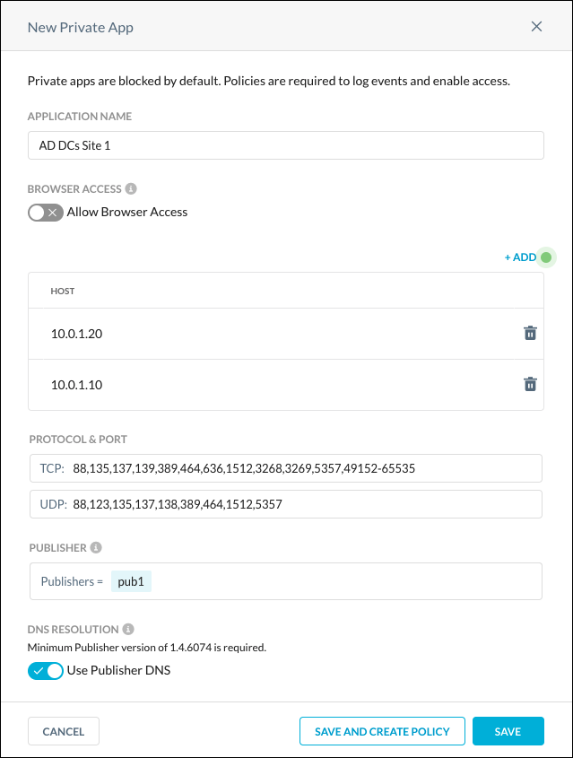
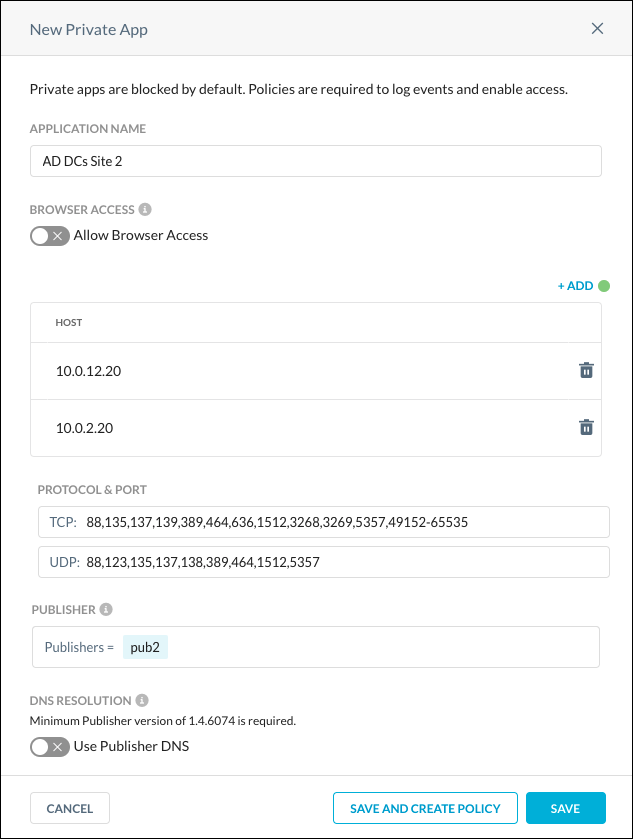

Netskope Private Access for Microsoft Active Directory Domain Services
This topic explains how to configure Netskope Private Access (NPA) applications for Microsoft Active Directory Domain Services, such as DNS, Kerberos, and WINS.
Often customers are looking for the same end-user experience in using Windows Active Directory Domain Services for mobile workforce as for on-premises. For example, if users working remotely on a company-managed Active Directory Domain joined device would like to connect to an on-premises application which uses Windows integrated authentication, they should not be prompted for a password.
Netskope Private Access enables administrators to expand Domain Services experience to the remote users conveniently and securely. The following diagram shows an example:
|  |
Configure Private Apps for DNS with the Publisher DNS Feature Enabled
The first step to enable end-users using Active Directory Domain Services and file shares remotely is to configure native, pass-through DNS resolution for the internal Active Directory Domain. In the default NPA deployment, each private application is represented to the client with an artificial non-routable IP address that’s been returned to the user in the DNS query response.
For example, if an on-premises private application has an IP address 10.0.0.10, NPA publisher will be accessing it using this IP address, while the end-users will receive an artificial IP address like 191.1.1.5 when running DNS query from their managed devices. To use Windows Domain Services, users have to use the real IP addresses of Windows Domain Controllers. To achieve that you need to configure a private application for DNS with the Publisher DNS feature enabled. This private DNS application allows users to join Active Directory Domains, query Active Directory groups policies, and FSMO roles from their remote devices.
To create a Private Application, log in to the Netskope UI, go to Settings > Security Cloud Platform > App Definition > Private Apps, and then create a new private application named Internal AD DNS with these parameters:
Host:
*.yourwindowsdomain.comand.yourwindowsdomain.comProtocol and Port:
TCP:
53UDP:
53Publisher: Select Publishers that can access your local internal DNS server resources.
Use Publisher DNS: Enable the toggle.
|  |
In the above configuration:
Host remote device will be accessing domain controllers using domain SRV records
_gc._tcp. yourwindowsdomain.comand_ldap._tcp._sites.DomainDnsZones. yourwindowsdomain.com, so we’re definingyourwindowsdomain.comand*.yourwindowsdomain.comwildcard as application FQDN to cover all DNS queries for Windows Domain Services.Port: Port 53 should be used for the DNS traffic
Configure Private Apps for Active Directory Domain Controllers
Next, define a private application that enables users to access Windows Domain Controllers from their managed devices.
Because the previous application you configured will return to the end-user internal IP address of the domain controller, you need to configure a private application that encompasses IP addresses for all domain controllers so that they become accessible via NPA.
Domain controllers are represented in DNS as SRV records. To retrieve all Domain Controllers for your Domain, use the nslookup utility on any endpoint that is able to access your internal DNS servers/AD controllers. In the example below, we assume your AD DNS name is yourwindowsdomain.com.
> nslookup Default Server: dns01.yourwindowsdomain.com Address: 10.1.2.3 > set type=SRV > _ldap._tcp.yourwindowsdomain.com
If your network is very distributed, you may want to map different publishers to serve different Active Directory controllers to achieve even distribution of Active Directory traffic.
The following configuration is based on the diagram at the beginning of this document.
Create a new Private Application for Active Directory Domain Services named AD DCs Site 1 with these parameters:
Host:
10.0.1.10and10.0.1.20Protocol and Port:
TCP:
88,135,137,139,389,445,464,636,1512,3268,3269,5357,49152-65535UDP:
88,123,135,137,138,389,464,1512,5357Publisher: In this case, you will select pub1. because it is best positioned to serve traffic to those domain controllers. If you have more than one publisher deployed at that physical location, you can also add them to the list of publishers serving this application for redundancy purposes.
Use Publisher DNS: Disable the toggle.
|  |
Ports used in the above configuration are:
Port | Description |
|---|---|
88 | Kerberos query |
135 | Remote Procedure Call |
137 | NetBIOS name |
139 | NetBIOS session |
389 | LDAP |
445 | SMB |
464 | Kerberos password change |
636 | Secure LDAP |
1512 | WINS |
3268 | LDAP for Global Catalog |
3269 | Secure LDAP to Global Catalog |
5357 | Network Discovery |
49152-65535 | Ephemeral ports required |
Port | Description |
|---|---|
88 | Kerberos query |
123 | NTP - used to set client time from domain controllers |
135 | Remote Procedure call |
137 | NetBIOS name |
138 | NetBIOS datagram |
389 | LDAP |
464 | Kerberos password change |
512 | WINS |
5357 | Network Discovery |
Repeat the same steps to create another new private application named AD DCs Site 2 but using 10.0.2.10 and 10.0.2.20 as the IP addresses in the application definition, as shown below:
|  |
After defining the above two applications, you can assign them to a user via Real-time Protection policy. Those users should have full ability to log in to the domain, change their domain password, update Global Policy Objects (GPO), and more.